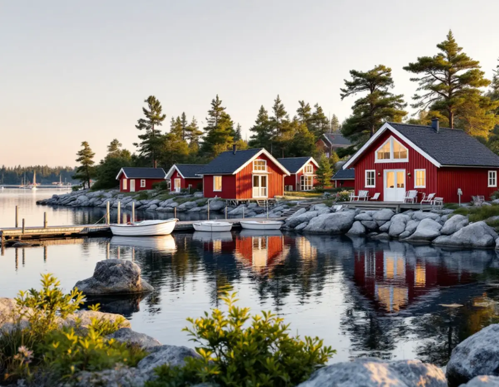
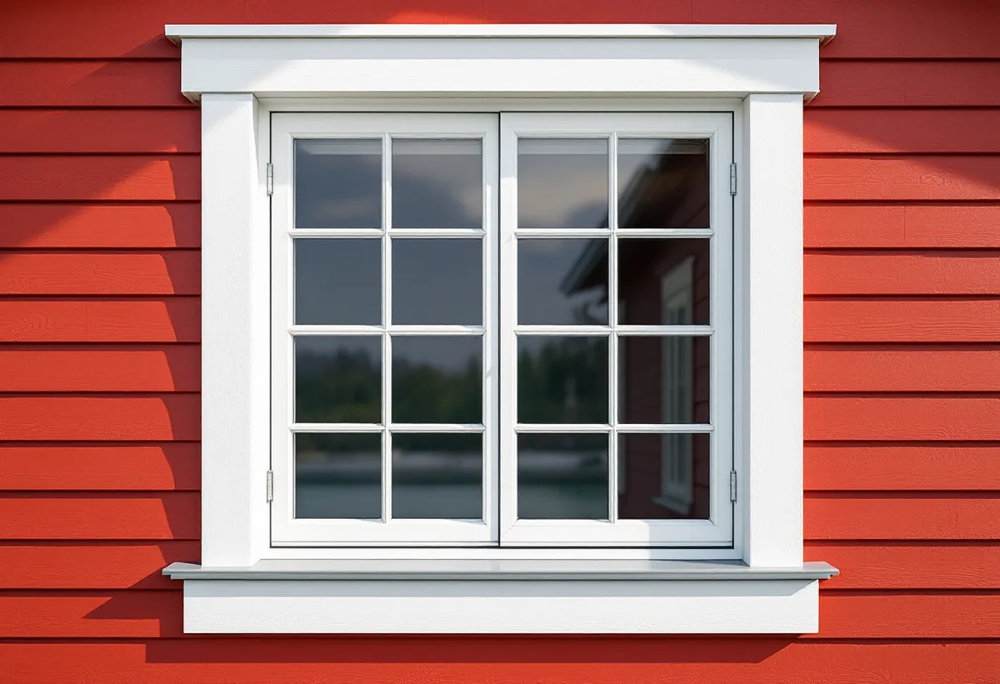

Platsbesök
Vi kommer ut till huset, även på ön, och går igenom panel, anslutningar och sockel.

Österåker sträcker sig från Åkersberga ut i skärgården, och fasaderna där har både vind, regn och en lång väg för materialet att hantera.
Beskriv jobbet kort.
Något blev fel. Kontrollera uppgifterna eller ring 08 12 410 276.
Vi tittar på jobbet på plats innan du får offert.
Du ser vad som ingår och vad det kostar.
Vi drar av ROT direkt och sköter ansökan.
Geal Entreprenad AB, Bromma. Org.nr 559303-7566.

Många hus byggdes som fritidshus och används i dag året runt. Geal Entreprenad AB renoverar fasader i Åkersberga, på Ljusterö och i övriga Österåker, med gratis platsbesök och skriftligt kostnadsförslag.
Österåkers planprogram för Ljusterö från 2010 beskriver ön som en av skärgårdens största. Där bor omkring 2 000 personer permanent under vinterhalvåret och uppskattningsvis drygt 10 000 under sommarhalvåret. Ön nås med en statlig färjelinje från Östanå.
Programmet konstaterar att fritidshusbebyggelsen och det moderna skogsbruket har gett de största landskapsförändringarna i kommunen under 1900-talet. Majoriteten av detaljplanerna på Ljusterö är från 1950- och 1960-talen, och i princip alla planer från den perioden är upprättade för fritidshus och fullt utbyggda. Omvandlingen till permanentboende pågår, och i ett mer centralt beläget omvandlingsområde som Svinninge var permanentboendet kring 70 procent.
Ett hus från en fritidshusplan på 1950-talet har ofta en vägg som var tänkt för sommarbruk. Ska det bebos året runt är fasaden en av de delar som behöver ses över, och ofta i samma veva som isoleringen. Boverket påpekar att det blir mest lönsamt att tilläggsisolera när fasaden ändå ska göras om, till exempel när panelen byts.
Programmet pekar ut flera miljöer med kulturhistoriska värden. Laggarsvik var en fiskeby som uppfördes i början av 1900-talet, med rödfärgade stugor på geometriskt utlagda tomter runt hamnen. Östra Lagnö by beskrivs som en av kommunens bäst bevarade skärgårdsbyar, och Västra Lagnö har flera stora sommarvillor från tidigt 1900-tal. Bolby och Hummelmora har byggnader främst från sent 1800-tal och tidigt 1900-tal.
Marum är en herrgård uppförd kring 1740, byggd i tegel med putsad fasad i två våningar och förklarad som byggnadsminne. Den visar att det i skärgårdens kulturmiljöer finns putsade fasader, inte bara trä.
I de här miljöerna rekommenderar programmet stor varsamhet vid förändringar. För en fasadrenovering innebär det att behålla panelens typ och de rödfärgade husens karaktär, och att laga hellre än byta där det går.
Boverket skriver att sannolikheten för inträngande vatten i en träregelvägg är hög vid slagregn och om det finns hål i fasadens ytskikt där vatten kan sugas eller tryckas in. När det blåser och regnar samtidigt kan en ventilerad luftspalt bakom panelen minska tryckskillnaden över det yttre regnskyddet, så att mindre vatten pressas in.
På ett hus nära vattnet går vi därför igenom fönsteranslutningar, genomföringar och skarvar extra noga. Boverket påpekar att det vid fönster ofta saknas vattenavledning i utrymmet mellan karm och omfattning, men att det i dag finns lösningar och material för att åtgärda det. Fönsterbleck med tillräckligt fall och uppvik mot karmen är en del av samma arbete.
Är det fönstren själva som är slut finns mer om byte under fönsterbyte.
En fasadrenovering på Ljusterö eller en annan ö kräver mer planering än på fastlandet. Panel, isolering och ställning ska fraktas över, och allt som saknas en dag kostar en extra resa. Vi beställer därför material efter uppmätning på plats och samlar leveranserna. Ställningen planeras efter tomten, som i skärgården ofta är bergig och sluttar mot vattnet, och vi bestämmer i förväg var material kan läggas upp utan att skada mark och växter. Rivningsvirke och spill tas med tillbaka i samma transporter.
Från den 1 december 2025 gäller enligt Boverket att det normalt inte behövs bygglov för att byta kulör eller fasadmaterial på ett en- eller tvåbostadshus. Undantaget är utökad lovplikt, bland annat när detaljplanen har bestämmelser om skydd för särskilda värden eller när byggnaden eller området är särskilt värdefullt. Vi kontrollerar detaljplanen för fastigheten innan arbetet planeras.
Vi kommer ut till huset, även på ön, och går igenom panel, anslutningar och sockel.
Detaljplanen och eventuella kulturvärden kontrolleras.
Du får ett skriftligt förslag med arbete, material och transporter redovisade.
Materialet beställs efter uppmätning och fraktas ut i samlade leveranser.
Panel lagas eller byts, luftspalt och fönsteranslutningar görs om och bleck förnyas.
Vi går igenom fasaden med dig innan ställningen tas ner.
Skatteverket ger rotavdrag för att byta och reparera fasader, tilläggsisolera, reparera eller byta fönster och montera byggnadsställningar i samband med rotarbete i ett småhus. Avdraget gäller också ett fritidshus som du äger och använder. Resekostnader och material ger inget avdrag, vilket är bra att veta på en ö.
Avdraget är 30 procent av arbetskostnaden, högst 50 000 kr per person och år och högst 75 000 kr tillsammans med rutavdrag. Geal drar avdraget direkt på fakturan.
Hur stor del av panelen som behöver bytas, om väggen ska isoleras, hur många fönsteranslutningar som ska göras om och om huset ligger på fastlandet eller på en ö. Transporter med färja och möjligheten att ställa upp ställning på en bergig tomt räknas in. Platsbesöket är gratis och du får ett skriftligt kostnadsförslag.
Puts, panel och tilläggsisolering.
Fasadrenovering i Stockholm →Takbyte, takbesiktning och plåtarbeten.
Takläggare i Österåker →Svinninge, sommarvillor och sportstugor.
Takrenovering i Österåker →Uthyrning, kulturmiljö och fornlämningar.
Attefallshus i Österåker →VA-utbyggnad, öar och vattensmarta val.
Badrumsrenovering i Österåker →Rivning, markarbete och gatukostnader.
Byggföretag i Österåker →Sommarvillornas fasadkulörer.
Fasadmålning i Österåker →Varsamhet, kulturvärden och kustlägen i Österåker.
Fönsterbyte i Österåker →Sommarvillorna i Svinninge.
Fönsterrenovering i Österåker →Jämna golv och färre trösklar.
Golvläggare i Österåker →Golv i sommarhus som blivit bostad.
Golvslipning i Österåker →Helårshus, brunn och avlopp.
Köksrenovering i Österåker →Sommarvillor, röda stugor och efterkrigsvillor.
Målare i Österåker →Plåtdetaljer på sommarvillorna.
Plåtslagare i Österåker →Bryggor, altaner och äldre snickerier.
Snickare i Österåker →Lertegel, lovfrågan och återbruk av pannor.
Takbyte i Österåker →Sommarvillan blir åretruntbostad.
Tapetsering i Österåker →Grannmedgivande, strandskydd och utstakning.
Tillbyggnad i Österåker →Fritidshuset, värmen och anmälan.
Totalrenovering i Österåker →Eller ring 08 12 410 276, mån–fre 08–17.
Beskriv jobbet kort.
Något blev fel. Kontrollera uppgifterna eller ring 08 12 410 276.